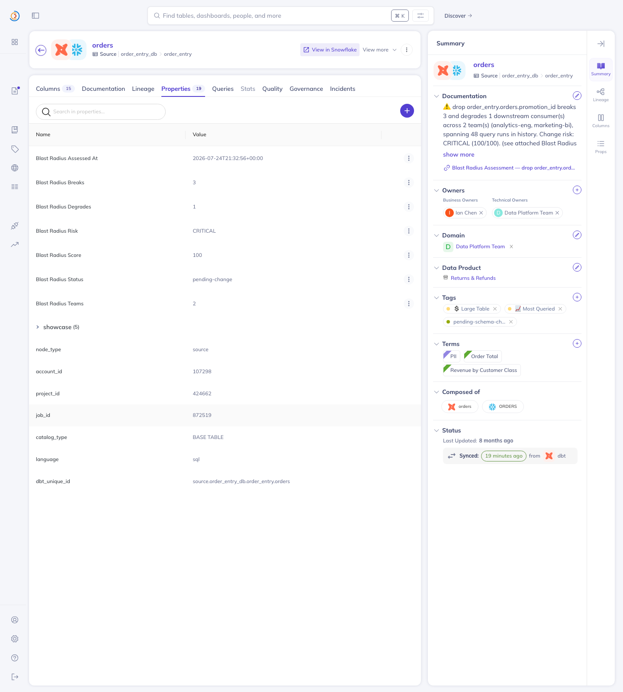
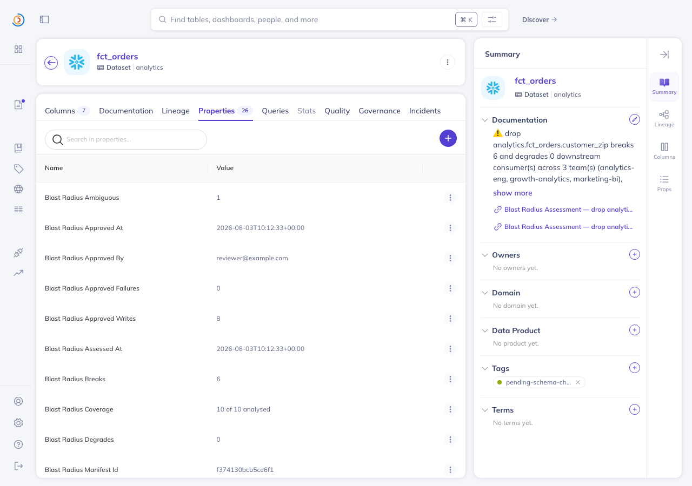
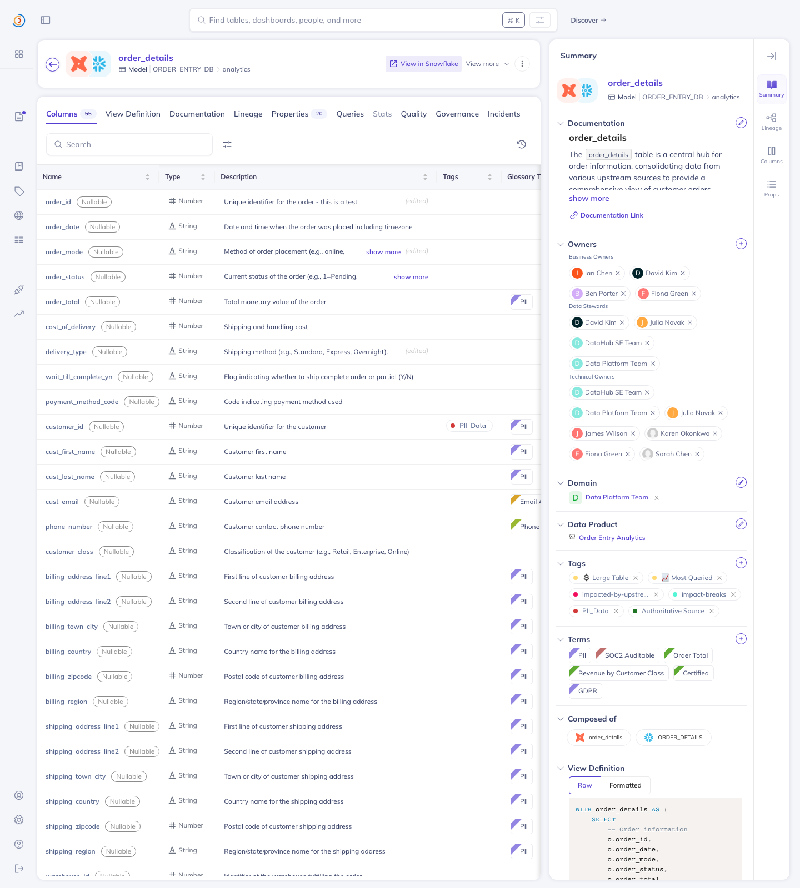

DataHub's Impact Analysis shows you the blast radius of a schema change. Blast Radius Autopilot defuses it — then checks its own work.
Blast Radius Autopilot is a command-line agent, so there is no app to log into. What is below instead is its actual output — every report on this page was written by the tool during a real run. Nothing here is a mockup, a screenshot of a design, or a hand-edited file. Open any of them and you are reading exactly what a data engineer would see.
If you would rather run it yourself, that takes about 30 seconds — jump to the bottom.
The agent takes a proposed schema change, works out what breaks, writes the dbt migration, and then tries to falsify its own fix. It ships all three possible answers on real runs, including the ones that don't flatter it.
Two consumers break. The generated patch is applied to an isolated copy, every patched file re-parses, impact is recomputed: breaks 2 → 0. All sixteen gates hold, so the catalog write is allowed automatically.
The fix helps but cannot finish the job — one reference stays unresolved. No automatic write. Eight mutations are queued behind a single-use approval manifest that a human must sign.
On a real DataHub instance the fix generator deliberately refuses to rewrite columns used
in WHERE and GROUP BY. Verification returns FAIL, and a FAIL can
never be approved by anyone.
That rule came from two false negatives we found in our own tool, both on live data. A SQL
parse failure was being scored SAFE / confidence high — it filed a Jinja-templated
dbt model as safe while that model referenced the target column four times. And a dropped column
referenced only in a WHERE was graded DEGRADES, when dropping it
actually makes the query error.
Both were fixed test-first. Parse failures became a distinct fourth verdict, UNKNOWN — never counted safe, never inflated into a break, and it blocks any PASS. Coverage is reported as its own dimension rather than folded into a reassuring score. You can see this in the reports: look for the "N of M analysed" tile.
The same chain, run unattended against every column in a catalog. Read-only by construction — the sweep module never imports the write layer, so it cannot write to DataHub even if asked.
Every candidate column change, ranked: landmine, needs review, verified safe, unassessed. 43 candidate columns across six catalogs in under a second.
Which columns in the catalog are riskiest to touch at all, ranked by how much depends on them.
The ledger reports the basis of every safe row —
verified_patch (a fix was generated, applied and re-checked) versus
no_references (nothing that parses referenced the column, so nothing was
verified). Both are safe to change, but only one involved verifying anything, and letting the
second borrow the first's credibility would have been this project's characteristic error in
miniature.
A local datahub docker quickstart loaded with the official
showcase-ecommerce datapack, read over the official
mcp-server-datahub, written back over the Python SDK and read back over GraphQL.
Read live over MCP. Only 6 of 24 downstream consumers expose parseable SQL; the other 18 are reported unassessed, not safe.
The run that exposed the first false negative. It now reads UNKNOWN and the whole run is REVIEW REQUIRED.



impacted-by-upstream-change.Nothing about the agent is specialised to e-commerce. The regulated examples route every write to human review. All example data is public or synthetic.
drop fct_orders.customer_zip
drop trips.trip_distance
rename diagnosis_code → icd10_code
rename revenue_usd → net_revenue_usd
drop customers.loyalty_tier
the full ledger for a regulated catalog
Proves: the patch applies cleanly in isolation, every patched SQL file re-parses, the diff stayed in scope, and the analyzer can no longer find a broken or unassessed consumer.
Does not prove: that anything ran. No query is executed — no warehouse is contacted, no data is read, no dbt build is invoked. It is evidence about SQL text, not runtime behaviour.
Residual risks we chose not to close are written down in LIMITATIONS.md rather than left to be discovered.
One click, nothing to install locally — Codespaces opens a ready Linux environment in your browser. Run the commands below in its terminal:
▶ Open in GitHub Codespaces View the source
Or clone it locally — no DataHub instance required either way:
git clone https://github.com/nemesisat/blast-radius-autopilot.git
cd blast-radius-autopilot/blast-radius-autopilot
python3 -m venv .venv && source .venv/bin/activate
pip install -e '.[dev]'
# impact + generated fix + self-verification
autopilot --catalog examples/verified-migration/catalog.json \
--change "drop analytics.fct_signups.referrer_code" --verify
# → ✅ PASS · breaks 2 → 0 · coverage 3 of 3
# the whole catalog, read-only
autopilot --sweep --catalog examples/showcase-ecommerce/catalog.json
pytest # 198 passed